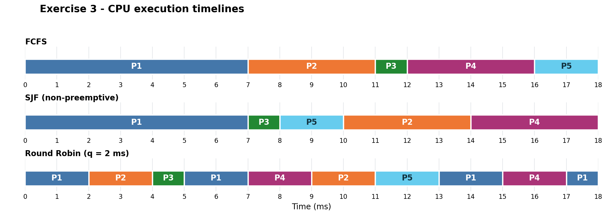

flowchart TD
X["X: two instances"] -->|"one allocated"| P1(("P1"))
X -->|"one allocated"| P3(("P3"))
P1 -->|"requests one"| Y["Y: one instance"]
Y -->|"allocated"| P2(("P2"))
P2 -->|"requests one"| X
7 Day 5 — Deadlocks and CPU scheduling
The main skills today are:
- Resource situation → graph → \(E,A,C,R\) → Banker hand execution → conclusion.
- Scheduling policy → execution timeline → completion, turnaround and waiting times.
This follows the Day 5 plan and Sheet 8 priorities in 15-Operating-Systems-and-Networks-SoSe-25-Notes.pdf and 08-ueb08-ibn-SS2025.pdf.
Deadlocks receive somewhat greater emphasis: the 2016 exam has an 11-point deadlock problem covering definitions, semaphore code, graphs and Banker’s main idea. Its appended older minitest also tests SJF and Round Robin. 12-ibn-klausur-2016.pdf The 2026 protocol explicitly reports graph construction followed by Banker execution; it does not explicitly report scheduling, but is an incomplete reconstruction. 13-Ged-chtnisprotokoll_Klausur_-IBN_Ersttermin.pdf
Deadlocks: what actually prevents progress
A group of processes is deadlocked (verklemmter Zustand) when every process in the group waits for an event that only another blocked process in that group can cause.
For a resource deadlock, that event is normally the release of a resource.
For example:
- \(P_1\) holds resource \(X\) and waits for \(Y\).
- \(P_2\) holds \(Y\) and waits for \(X\).
- Both release their resources only after acquiring both and completing their work.
Neither reaches its release operations.
Ordinary blocking is different: a process can wait for a resource held by another process that is still able to finish and release it.
Starvation is also different: a process is repeatedly passed over while other processes continue making progress. In a deadlock, the participating processes cannot make progress through their normal execution.
A deadlock can involve only part of a system. Other processes may continue running.
The four necessary Coffman conditions
For the resource model used here, deadlock requires all four:
| Condition | Meaning | Why it matters |
|---|---|---|
| Mutual exclusion (wechselseitiger Ausschluss) | Each relevant resource instance can be held by only one process at a time. | If everyone could use the resource simultaneously, exclusive ownership would not block access. |
| Hold and wait | A process retains resources while waiting for additional ones. | Its existing allocation remains unavailable to others. |
| No preemption (Ununterbrechbarkeit) | Allocated resources cannot simply be taken away; the owner must release them. | The system cannot resolve the dependency by forcibly reclaiming the needed resource. |
| Circular wait (zyklische Wartebedingung) | There is a cyclic chain of resource dependencies between processes. | The waiting dependencies can lead back to the original process. |
Mutual exclusion applies to an instance, not necessarily to an entire resource type. A type with three instances can serve three processes simultaneously.
Also, CPU preemption is different from resource preemption. Suspending a process and scheduling another does not release its mutexes or allocated devices.
Necessary does not automatically mean sufficient
Two distinctions matter:
- A system may permit all four conditions without currently being deadlocked. Opposite lock orders, for example, allow a bad interleaving, but one process might acquire both locks and finish before the other starts.
- With multiple instances, a graph can contain a cycle while another process can release an interchangeable instance and break the dependency.
To establish a particular deadlock, show why the relevant waiting cannot be resolved.
Preventing deadlock through acquisition order
Assign exclusive locks a global order, for example:
\[ L<M<N. \]
Every process must acquire the locks it needs in increasing order. A process needing \(L\) and \(N\) acquires \(L\) first; one needing \(M\) and \(N\) acquires \(M\) first.
For distinct single-instance locks, a circular wait would require resource ranks to keep increasing and eventually return to the starting rank:
\[ L<M<N<L, \]
which is impossible. This eliminates circular wait.
The rule must apply to all relevant acquisition paths. Merely changing the release order does not repair inconsistent acquisition.
Your Day 2 example in which writers acquire several permits also illustrates hold and wait: partial allocations remain held while further acquisition blocks. Ordering distinct lock types is a useful prevention rule, but it does not automatically repair repeated partial acquisition from one multi-instance semaphore.
Resource-allocation graphs
A resource-allocation graph (Ressourcenbelegungsgraph, RBG) represents both ownership and outstanding requests.
| Element | Meaning |
|---|---|
| Circle \(P_i\) | Process |
| Rectangle for resource type \(X\) | Resource type |
| Dots inside the rectangle | Individual instances |
| \(P_i\rightarrow X\) | \(P_i\) requests an additional instance of \(X\) |
| Instance of \(X\rightarrow P_i\) | That instance is allocated to \(P_i\) |
Requests normally target a resource type: any available instance of that type can satisfy them. Allocation edges originate from particular instances.
If several instances are allocated or requested, show the corresponding number of edges, or clearly label their multiplicity.
What a cycle tells you
Under the ordinary resource model, where all stated requests must be satisfied:
| Graph situation | Conclusion |
|---|---|
| No directed cycle | No resource deadlock |
| Cycle, with one instance of each resource type | Deadlock |
| Cycle, with multiple instances | Deadlock is possible; the cycle alone does not prove it |
Consider two instances of \(X\), one instance of \(Y\), and three processes:
- \(P_1\) holds one \(X\) and requests \(Y\).
- \(P_2\) holds \(Y\) and requests one \(X\).
- \(P_3\) holds the other \(X\) and needs nothing further.
The following compact diagram labels instance counts instead of drawing dots:
There is a cycle:
\[ P_1\rightarrow Y\rightarrow P_2\rightarrow X\rightarrow P_1. \]
Nevertheless, \(P_3\) can finish and release its \(X\). Then \(P_2\) can obtain that instance, finish and release \(Y\), allowing \(P_1\) to finish.
The cycle therefore does not represent an unavoidable deadlock.
The course’s vectors and matrices
Use the notation from the IBN summary: 01-ibn-zusammenfassung.pdf
For \(n\) processes and \(m\) resource types:
| Symbol | Course meaning |
|---|---|
| \(E_j\) | Total number of existing instances of resource type \(j\) |
| \(A_j\) | Number of currently free instances of type \(j\), the Ressourcenrestvektor |
| \(C_{ij}\) | Number of instances of type \(j\) currently allocated to process \(i\), the Belegungsmatrix |
| \(R_{ij}\) | Number of additional instances of type \(j\) requested by process \(i\), the Anforderungsmatrix |
Rows correspond to processes; columns correspond to resource types. State their order before writing matrices.
For every resource type:
\[ \boxed{E_j=A_j+\sum_{i=1}^{n}C_{ij}} \]
and therefore:
\[ \boxed{A_j=E_j-\sum_{i=1}^{n}C_{ij}}. \]
Outstanding requests are not allocated resources. Do not subtract \(R\) when calculating the initially free resources.
For the preceding graph, using columns \((X,Y)\) and rows \((P_1,P_2,P_3)\):
\[ E=(2,1),\qquad C= \begin{pmatrix} 1&0\\ 0&1\\ 1&0 \end{pmatrix}, \qquad R= \begin{pmatrix} 0&1\\ 1&0\\ 0&0 \end{pmatrix}. \]
Thus:
\[ A=(2,1)-(2,1)=(0,0). \]
No free resources does not imply deadlock: \(P_3\) has no further request and can finish.
Executing the course’s Banker algorithm by hand
The course procedure repeatedly asks:
Can some unmarked process obtain its additional requested resources, finish, and release its allocation?
For these hand exercises, assume that once a process receives its stated additional resources, it eventually finishes without further requests and releases everything it holds.
The eligibility test is:
\[ \boxed{R_i\leq A} \]
component by component. There must be enough of every resource type.
For example:
\[ (1,0,2)\nleq(2,3,1), \]
because only one instance of the third type is available. Having enough resources in total does not help.
The procedure is:
- Calculate the initial \(A\).
- Leave all processes unmarked.
- Find an unmarked process satisfying \(R_i\leq A\).
- Mark it and record its index.
- Update: \[ \boxed{A\leftarrow A+C_i}. \]
- Reconsider the remaining processes with the updated \(A\).
- Stop when all processes are marked or no remaining process is eligible.
This is the hand procedure used in the Sheet 8 solutions. 14-Operating-Systems-and-Networs-SoSe-25-Solutions.pdf
Why add only \(C_i\)?
Conceptually, the process first receives \(R_i\), then releases both its old and newly obtained resources:
\[ A_{\text{after}} =A_{\text{before}}-R_i+(C_i+R_i) =A_{\text{before}}+C_i. \]
The newly granted resources cancel. The net increase comes from its previous allocation.
Worked reduction of the graph above
| Step | Selected process | Request \(R_i\) | \(A\) before | \(A\) after releasing \(C_i\) |
|---|---|---|---|---|
| 1 | \(P_3\) | \((0,0)\) | \((0,0)\) | \((1,0)\) |
| 2 | \(P_2\) | \((1,0)\) | \((1,0)\) | \((1,1)\) |
| 3 | \(P_1\) | \((0,1)\) | \((1,1)\) | \((2,1)\) |
All processes can be marked. A completion sequence is:
\[ P_3,\ P_2,\ P_1. \]
There is no deadlock under the stated model.
If several processes are eligible, any may be selected unless the question specifies a rule. Completing one only increases the working availability vector, so you do not need to search through permutations or backtrack.
Interpreting the result
- All marked: a complete execution sequence exists.
- Some remain unmarked and none is eligible: the remaining requests cannot be resolved through this reduction; a deadlocked group remains in the current-request model. Report the unmarked processes as the course asks.
Strictly, a process holding no resources can be blocked behind a deadlocked group without belonging to its circular dependency. Distinguish that case if a question specifically asks for the core cycle.
Detection versus avoidance: the meaning of \(R\) matters
The IBN summary explicitly uses the procedure in two related ways:
| Use | Meaning of \(R_i\) | Meaning of failure to find a complete sequence |
|---|---|---|
| Deadlock detection | Current outstanding requests | Deadlock remains under the exercise model |
| Deadlock avoidance / safety test | Maximum remaining additional demand until completion | The state is unsafe; guaranteed completion cannot be established |
Textbooks commonly reserve “Banker’s algorithm” for avoidance using declared maximum demands. The course also calls the current-request reduction Bankieralgorithmus. For the exam, follow the supplied meaning of \(R\).
An unsafe state is not necessarily already deadlocked: maximum future demands may never all be requested.
For avoidance, the system tentatively grants a request, updates the hypothetical allocation and availability, and runs the safety test. It grants the request permanently only if a safe completion sequence remains.
CPU scheduling: the execution model
The CPU scheduler selects a process from the ready processes. A process blocked on I/O or a resource is not currently eligible.
A process normally alternates between:
- a CPU burst: execution on the CPU;
- an I/O phase: performing or waiting for I/O.
| Process type | Typical behaviour | Scheduling implication |
|---|---|---|
| CPU-bound (rechenintensiv) | Long CPU bursts | Frequent switching can add overhead to long computations. |
| I/O-bound (I/O-intensiv) | Many short CPU bursts separated by I/O | Prompt CPU access lets it issue its next I/O operation, helping responsiveness and device utilisation. |
“I/O-bound” refers especially to short CPU bursts and frequent I/O, not necessarily exceptionally long individual I/O operations.
For the calculation exercises below, use one CPU, one CPU burst per process, no I/O, and zero context-switch overhead.
FCFS — First Come, First Served
Maintain a FIFO ready queue.
When the CPU becomes free, run the process that has waited in that queue longest. It runs until its CPU burst finishes.
FCFS is non-preemptive: a new arrival does not interrupt the running process.
A long burst can delay many short ones—the convoy effect.
SJF — Shortest Job First
Whenever the CPU becomes free, select the shortest next CPU burst among processes currently ready.
For Day 5, use non-preemptive SJF, as in the course exercise. Once selected, the process finishes its burst even if a shorter process arrives meanwhile.
- If all processes are ready initially, sort them by burst length.
- With different arrival times, reconsider only the processes that have arrived whenever the CPU becomes free.
Use a stated tie rule, such as earlier arrival, then lower process index.
When all jobs are available initially, burst lengths are known, and overhead is ignored, SJF minimises average waiting time among non-preemptive schedules. Putting a short job before a long one reduces how long that short job waits.
Real systems usually have to estimate future burst lengths.
Round Robin — RR
Maintain a FIFO ready queue and choose a positive time quantum \(q\).
For each CPU allocation:
- Remove the process at the front.
- Run it for: \[ \Delta t=\min(q,\text{remaining burst}). \]
- If it finishes, remove it permanently.
- Otherwise, put it at the back of the ready queue.
Newly arriving processes join the back. They do not interrupt the current slice.
If an arrival coincides exactly with quantum expiry, the ordering can depend on the chosen convention. State the convention and apply it consistently.
A process that finishes early uses only the time it needs; the unused part of its quantum is not an idle interval.
Short RR example
All three processes arrive at \(t=0\), initially queued as \(P_1,P_2,P_3\), with bursts \(3,1,2\) ms. Let \(q=2\) ms.
| CPU interval | Process | Remaining burst afterwards | Ready queue afterwards |
|---|---|---|---|
| \(0\)–\(2\) | \(P_1\) | 1 | \(P_2,P_3,P_1\) |
| \(2\)–\(3\) | \(P_2\) | 0 | \(P_3,P_1\) |
| \(3\)–\(5\) | \(P_3\) | 0 | \(P_1\) |
| \(5\)–\(6\) | \(P_1\) | 0 | Empty |
These intervals provide the bars and boundary labels for the Gantt diagram.
Effect of the quantum
- Small \(q\): frequent opportunities to run, but more context-switch overhead in a real system.
- Large \(q\): fewer switches, but longer delays between turns.
- If \(q\) is at least every burst length in these one-burst exercises, RR behaves like FCFS.
RR gives regular CPU access to ready processes; it does not necessarily minimise average waiting time.
Gantt diagrams and time calculations
A Gantt diagram places labelled execution intervals along a time axis. Mark every boundary at which execution changes. Include an idle interval if no process is ready.
For scheduling, use:
| Symbol | Meaning |
|---|---|
| \(a_i\) | Arrival time |
| \(b_i\) | Total CPU burst |
| \(f_i\) | Completion time: end of the process’s last execution interval |
| \(T_i\) | Turnaround time (Durchlaufzeit) |
| \(W_i\) | Total waiting time (Wartezeit) |
The formulas are:
\[ \boxed{T_i=f_i-a_i} \]
and, for these one-burst exercises without I/O:
\[ \boxed{W_i=T_i-b_i=f_i-a_i-b_i}. \]
Average waiting time:
\[ \boxed{\overline W=\frac{1}{n}\sum_{i=1}^{n}W_i}. \]
If every arrival is at zero, \(T_i=f_i\). Otherwise, completion time and turnaround time differ.
Waiting time includes all time spent ready but not running. For non-preemptive execution, it is simply start time minus arrival time. Under RR, it also includes the waits between slices.
In the short RR example, \(P_1\) starts immediately but then waits from \(t=2\) to \(t=5\):
\[ W_1=6-0-3=3\text{ ms}. \]
Its first-start delay is zero. That delay, often called response time, is different from total waiting time.
The formula \(W=T-b\) relies on the exercise’s no-I/O model. In a general process, turnaround time also contains blocked time.
A reliable manual procedure
- Write down arrivals, bursts, policy, quantum and tie rules.
- Track the ready set; for RR, also track queue order and remaining bursts.
- Construct the complete execution timeline.
- Read each \(f_i\) from its last interval.
- Calculate \(T_i\), then \(W_i\), then the average.
Check that:
- no process runs before arriving;
- each process receives exactly its stated burst;
- no waiting time is negative;
- with no idle time or overhead, final completion equals the sum of all bursts.
Fairness and starvation
Under the usual assumptions of finite bursts and a functioning scheduler:
| Policy | Can a ready process starve? |
|---|---|
| FCFS | No: new arrivals cannot overtake it. |
| SJF | Yes: a continuing stream of short jobs can indefinitely postpone a long job. |
| RR | No: the FIFO queue repeatedly gives it a turn. |
| Fixed-priority scheduling | Yes: continuing higher-priority work can postpone it indefinitely. |
In a finite closed exercise set, SJF eventually runs every process. Its starvation risk concerns continuing arrivals.
Sheet 8 A6 names three algorithms despite later saying “four”; use FCFS, SJF and RR.
Common exam traps
- Giving code that can deadlock without showing an actual blocking interleaving.
- Claiming every graph cycle proves deadlock, without checking instance counts.
- Reversing request and allocation arrows.
- Treating \(E\) as free resources, or treating \(R_i\) as including resources already held.
- Comparing resource-vector totals instead of comparing every component.
- Updating \(A\) incorrectly: after marking a process, use \(A+C_i\), and reconsider previously ineligible processes.
- Treating non-preemptive SJF as preemptive, or choosing a job that has not arrived.
- Retaining a completed process in an RR queue, or giving it a full quantum after it finishes.
- Confusing completion with turnaround, or first-start delay with total waiting.
Exam-like exercises
Allow approximately 60–75 minutes for these three problems. Show intermediate states and concise justifications.
Exercise 1 — A three-process semaphore deadlock
Suggested time: 12–15 minutes.
Three exclusive resources are controlled by:
Semaphore L = 1
Semaphore M = 1
Semaphore N = 1The processes execute:
P1:
wait(L)
wait(M)
work()
signal(M)
signal(L)
P2:
wait(M)
wait(N)
work()
signal(N)
signal(M)
P3:
wait(N)
wait(L)
work()
signal(L)
signal(N)Assume work() eventually finishes if reached. Processes retain acquired resources while blocked.
- Give an explicit interleaving that produces deadlock. For each acquisition attempt, state whether it succeeds or blocks, and which resources are held.
- Define deadlock, then identify all four Coffman conditions in this execution.
- Explain why giving each blocked process another CPU turn cannot resolve the situation.
- Repair the acquisition order using a single global resource order. Write the corrected acquisition and release operations for each process.
- Would making all three semaphores fair/FIFO repair the original deadlock? Justify your answer.
Exercise 2 — Resource situation → graph → matrices → Banker
Suggested time: 22–27 minutes.
An image-processing service manages:
- three interchangeable camera units \(K\);
- two interchangeable storage interfaces \(S\);
- two interchangeable accelerator units \(G\).
Every instance is exclusive and cannot be forcibly reclaimed. A process retains its current allocation while waiting. Once its complete additional request is satisfied, it can finish without further requests and releases all its resources.
The current situation is:
| Process | Currently holds | Requests additionally |
|---|---|---|
| \(P_1\) | One camera and one accelerator | One storage interface |
| \(P_2\) | One storage interface | One camera and one accelerator |
| \(P_3\) | One camera | One storage interface |
| \(P_4\) | One camera and one storage interface | One accelerator |
Use columns \((K,S,G)\) and rows \((P_1,P_2,P_3,P_4)\).
Draw the resource-allocation graph, including all instances and outstanding requests.
Identify at least one directed cycle. Explain what its existence lets you conclude before executing the algorithm.
Derive \(E,C,R,A\). Check resource conservation separately for all three types.
Execute the course’s Banker procedure. Whenever several processes are eligible, select the one with the smallest index.
Record:
Step Selected process Its request \(A\) before \(A\) after State whether all processes can complete. Give a completion sequence or the unmarked processes, and justify the conclusion.
Now consider an independent variant of the original state: all holdings remain unchanged, but \(P_4\) additionally requests one camera and one accelerator, rather than only one accelerator.
- Update the graph and \(R\), then repeat the algorithm. Does the conclusion change?
- Explain why the presence of a free resource instance is insufficient by itself to establish progress in this variant.
Exercise 3 — Scheduling with arrivals and queue boundaries
Suggested time: 25–30 minutes.
Five processes have the following arrival times and CPU bursts:
| Process | Arrival \(a_i\), ms | Burst \(b_i\), ms |
|---|---|---|
| \(P_1\) | 0 | 7 |
| \(P_2\) | 1 | 4 |
| \(P_3\) | 2 | 1 |
| \(P_4\) | 4 | 4 |
| \(P_5\) | 5 | 2 |
Use one CPU, no I/O and zero context-switch overhead.
Apply:
- FCFS;
- non-preemptive SJF;
- RR with \(q=2\) ms.
Conventions:
- For SJF ties, prefer earlier arrival, then lower index.
- In RR, arrivals join the queue when they occur.
- An arrival exactly at quantum expiry is enqueued before the unfinished running process is re-enqueued.
- A completed process is removed immediately.
- Draw a complete Gantt diagram for each policy.
- For each policy, calculate every process’s: \[ f_i,\qquad T_i,\qquad W_i. \]
- Calculate the average waiting time for each policy. Which is smallest for this workload?
- For RR, give the ready queue immediately before selecting the next process at: \[ t=2,\qquad t=4,\qquad t=5. \] Explain how the stated arrival convention affects these queues.
- Explain whether \(P_2\)’s arrival at \(t=1\) interrupts \(P_1\) under SJF or RR. Then determine only the SJF execution order if all five processes instead arrive at \(t=0\).
- If the RR quantum becomes \(10\) ms, which studied algorithm does its execution match for this workload? Explain. Also identify which of FCFS, SJF and RR can starve a ready process under a continuing stream of arrivals.
Solutions
These solutions use the stated resource assumptions, SJF tie-breaking rule, and RR convention that arrivals at quantum expiry are enqueued before the unfinished running process.
Exercise 1 — A three-process semaphore deadlock
Deadlocking execution
One valid interleaving is:
| Step | Process | Operation | Result | Resources held afterwards |
|---|---|---|---|---|
| 1 | \(P_1\) | wait(L) |
Succeeds | \(P_1:L\) |
| 2 | \(P_2\) | wait(M) |
Succeeds | \(P_1:L;\ P_2:M\) |
| 3 | \(P_3\) | wait(N) |
Succeeds | \(P_1:L;\ P_2:M;\ P_3:N\) |
| 4 | \(P_1\) | wait(M) |
Blocks: \(P_2\) holds \(M\) | Unchanged |
| 5 | \(P_2\) | wait(N) |
Blocks: \(P_3\) holds \(N\) | Unchanged |
| 6 | \(P_3\) | wait(L) |
Blocks: \(P_1\) holds \(L\) | Unchanged |
The resulting dependencies are:
\[ P_1\text{ waits for }P_2,\qquad P_2\text{ waits for }P_3,\qquad P_3\text{ waits for }P_1. \]
All three are blocked before work() and before their release operations.
Other interleavings are equally valid if they establish these holdings and blocked requests.
Definition and Coffman conditions
Definition: A group of processes is deadlocked when every process in the group waits for an event that only another blocked process in that group can cause.
Here, those events are resource releases.
| Condition | Explanation in this execution |
|---|---|
| Mutual exclusion | Each semaphore has one permit, so each resource can be held by only one process. |
| Hold and wait | Each process retains its first resource while waiting for its second. |
| No preemption | Resources are released through signal; they cannot be forcibly reclaimed under the assumptions. |
| Circular wait | \(P_1\rightarrow P_2\rightarrow P_3\rightarrow P_1\). |
Why more CPU turns do not help
Each process is blocked at its second wait. It cannot execute the later signal operations until that wait succeeds.
Scheduling another process does not release the resource held by the suspended process. CPU scheduling cannot break this resource dependency.
Repair through a global acquisition order
Choose:
\[ L<M<N. \]
Every process acquires its required resources in increasing order:
P1:
wait(L)
wait(M)
work()
signal(M)
signal(L)
P2:
wait(M)
wait(N)
work()
signal(N)
signal(M)
P3:
wait(L)
wait(N)
work()
signal(N)
signal(L)Only \(P_3\)’s acquisition order needed changing.
A circular wait would now require resource ranks to increase around a cycle and return to the starting rank, which is impossible.
Releasing in reverse order is conventional. Consistent acquisition ordering is what prevents this deadlock.
Would FIFO semaphores repair it?
No.
FIFO determines which waiting process receives a permit when one becomes available. Here, no process can reach its release operations, so no permit becomes available.
Fairness does not eliminate this circular wait.
Exercise 2 — Resource situation → graph → matrices → Banker
Resource-allocation graph
One valid naming of the individual instances is:
| Type | Instance allocations |
|---|---|
| Cameras \(K\) | \(K_1\rightarrow P_1,\ K_2\rightarrow P_3,\ K_3\rightarrow P_4\) |
| Storage interfaces \(S\) | \(S_1\rightarrow P_2,\ S_2\rightarrow P_4\) |
| Accelerators \(G\) | \(G_1\rightarrow P_1;\ G_2\) is free |
The instance numbers are arbitrary; assigning different instance names gives an equivalent graph.
The requests are:
\[ P_1\rightarrow S,\qquad P_2\rightarrow K,\qquad P_2\rightarrow G,\qquad P_3\rightarrow S,\qquad P_4\rightarrow G. \]
This compact graph labels allocation edges with instance names:
flowchart TD
K["K: 3 instances"] -->|"K1 allocated"| P1(("P1"))
K -->|"K2 allocated"| P3(("P3"))
K -->|"K3 allocated"| P4(("P4"))
S["S: 2 instances"] -->|"S1 allocated"| P2(("P2"))
S -->|"S2 allocated"| P4
G["G: 2 instances; G2 free"] -->|"G1 allocated"| P1
P1 -->|"requests 1"| S
P2 -->|"requests 1"| K
P2 -->|"requests 1"| G
P3 -->|"requests 1"| S
P4 -->|"requests 1"| G
Cycle and its interpretation
One directed cycle is:
\[ \boxed{P_1\rightarrow S\rightarrow P_2\rightarrow K\rightarrow P_1}. \]
Another is:
\[ P_1\rightarrow S\rightarrow P_4\rightarrow G\rightarrow P_1. \]
Because the resource types have multiple instances, a cycle alone does not establish deadlock. An interchangeable instance may become available through another process’s completion.
Vectors and matrices
Use columns \((K,S,G)\) and rows \((P_1,P_2,P_3,P_4)\).
The total resource vector is:
\[ \boxed{E=(3,2,2)}. \]
The allocation matrix is:
\[ \boxed{ C= \begin{pmatrix} 1&0&1\\ 0&1&0\\ 1&0&0\\ 1&1&0 \end{pmatrix} }. \]
The request matrix is:
\[ \boxed{ R= \begin{pmatrix} 0&1&0\\ 1&0&1\\ 0&1&0\\ 0&0&1 \end{pmatrix} }. \]
The column sums of \(C\) are:
\[ \sum_i C_i=(3,2,1). \]
Therefore:
\[ \boxed{A=E-\sum_i C_i=(0,0,1)}. \]
Resource conservation holds separately:
| Type | Total | Allocated | Free |
|---|---|---|---|
| \(K\) | 3 | 3 | 0 |
| \(S\) | 2 | 2 | 0 |
| \(G\) | 2 | 1 | 1 |
Banker execution
Initially:
\[ A=(0,0,1). \]
- \(P_1\) is ineligible: it needs a storage interface.
- \(P_2\) is ineligible: it needs a camera.
- \(P_3\) is ineligible: it needs a storage interface.
- \(P_4\) is eligible: its request is \((0,0,1)\).
Applying the smallest-eligible-index rule:
| Step | Selected process | Request \(R_i\) | \(A\) before | Allocation released \(C_i\) | \(A\) after |
|---|---|---|---|---|---|
| 1 | \(P_4\) | \((0,0,1)\) | \((0,0,1)\) | \((1,1,0)\) | \((1,1,1)\) |
| 2 | \(P_1\) | \((0,1,0)\) | \((1,1,1)\) | \((1,0,1)\) | \((2,1,2)\) |
| 3 | \(P_2\) | \((1,0,1)\) | \((2,1,2)\) | \((0,1,0)\) | \((2,2,2)\) |
| 4 | \(P_3\) | \((0,1,0)\) | \((2,2,2)\) | \((1,0,0)\) | \((3,2,2)\) |
After \(P_4\) finishes, \(P_1,P_2,P_3\) are all eligible. The specified rule selects \(P_1\) first.
Remember:
\[ A_{\text{after}}=A_{\text{before}}+C_i. \]
The requested resources are temporarily granted and subsequently returned; they do not produce an additional net increase.
Conclusion for the original state
All processes can complete:
\[ \boxed{P_4,\ P_1,\ P_2,\ P_3}. \]
Thus:
\[ \boxed{\text{No deadlock under the stated model.}} \]
The final availability vector equals \(E\), as expected when every process has released its resources.
Other completion sequences can also be valid, but the question’s smallest-index rule determines the sequence above.
Changed-request variant
Return to the original allocations and initial availability. Only \(P_4\)’s request changes.
The new request matrix is:
\[ \boxed{ R'= \begin{pmatrix} 0&1&0\\ 1&0&1\\ 0&1&0\\ 1&0&1 \end{pmatrix} }. \]
The graph gains an additional request edge:
\[ P_4\rightarrow K. \]
Its request edge to \(G\) remains.
Since \(E\) and \(C\) are unchanged:
\[ A=(0,0,1). \]
| Process | Request | Why it is ineligible |
|---|---|---|
| \(P_1\) | \((0,1,0)\) | No storage interface is free. |
| \(P_2\) | \((1,0,1)\) | No camera is free. |
| \(P_3\) | \((0,1,0)\) | No storage interface is free. |
| \(P_4\) | \((1,0,1)\) | No camera is free. |
No process can be marked. The algorithm stops immediately with:
\[ \boxed{\text{Unmarked processes: }P_1,P_2,P_3,P_4}. \]
Therefore:
\[ \boxed{\text{The variant is deadlocked under the stated model.}} \]
Why the free accelerator does not establish progress
The free accelerator satisfies only part of the requests of \(P_2\) and \(P_4\). Both also need a camera.
Meanwhile, \(P_1\) and \(P_3\) need storage interfaces held by \(P_2\) and \(P_4\).
No process can obtain its complete request, finish and release its existing allocation. Availability must be checked component by component, for the complete request vector.
Exercise 3 — Scheduling with arrivals and queue boundaries
All times below are in milliseconds.
Use:
\[ T_i=f_i-a_i,\qquad W_i=T_i-b_i. \]
Gantt diagrams

FCFS
The arrival order is:
\[ P_1,\ P_2,\ P_3,\ P_4,\ P_5. \]
| Interval | Running process |
|---|---|
| \(0\)–\(7\) | \(P_1\) |
| \(7\)–\(11\) | \(P_2\) |
| \(11\)–\(12\) | \(P_3\) |
| \(12\)–\(16\) | \(P_4\) |
| \(16\)–\(18\) | \(P_5\) |
The resulting times are:
| Process | Arrival \(a_i\) | Burst \(b_i\) | Completion \(f_i\) | Turnaround \(T_i\) | Waiting \(W_i\) |
|---|---|---|---|---|---|
| \(P_1\) | 0 | 7 | 7 | 7 | 0 |
| \(P_2\) | 1 | 4 | 11 | 10 | 6 |
| \(P_3\) | 2 | 1 | 12 | 10 | 9 |
| \(P_4\) | 4 | 4 | 16 | 12 | 8 |
| \(P_5\) | 5 | 2 | 18 | 13 | 11 |
Hence:
\[ \boxed{ \overline W_{\mathrm{FCFS}} =\frac{0+6+9+8+11}{5} =\frac{34}{5} =6.8\text{ ms} }. \]
Non-preemptive SJF
At \(t=0\), only \(P_1\) has arrived. It runs until \(t=7\), because SJF is non-preemptive.
At \(t=7\), all other processes are ready. Their burst lengths are:
\[ P_3:1,\qquad P_5:2,\qquad P_2:4,\qquad P_4:4. \]
\(P_2\) precedes \(P_4\) because it arrived earlier.
The execution order is:
\[ \boxed{P_1,\ P_3,\ P_5,\ P_2,\ P_4}. \]
| Interval | Running process |
|---|---|
| \(0\)–\(7\) | \(P_1\) |
| \(7\)–\(8\) | \(P_3\) |
| \(8\)–\(10\) | \(P_5\) |
| \(10\)–\(14\) | \(P_2\) |
| \(14\)–\(18\) | \(P_4\) |
| Process | Arrival \(a_i\) | Burst \(b_i\) | Completion \(f_i\) | Turnaround \(T_i\) | Waiting \(W_i\) |
|---|---|---|---|---|---|
| \(P_1\) | 0 | 7 | 7 | 7 | 0 |
| \(P_2\) | 1 | 4 | 14 | 13 | 9 |
| \(P_3\) | 2 | 1 | 8 | 6 | 5 |
| \(P_4\) | 4 | 4 | 18 | 14 | 10 |
| \(P_5\) | 5 | 2 | 10 | 5 | 3 |
Thus:
\[ \boxed{ \overline W_{\mathrm{SJF}} =\frac{0+9+5+10+3}{5} =\frac{27}{5} =5.4\text{ ms} }. \]
Round Robin with \(q=2\) ms
Queue fronts are shown on the left. Each queue below is recorded after the interval’s arrivals, completion or re-enqueue have been handled.
| Interval | Running process | Its remaining burst afterwards | Ready queue afterwards |
|---|---|---|---|
| \(0\)–\(2\) | \(P_1\) | 5 | \(P_2,P_3,P_1\) |
| \(2\)–\(4\) | \(P_2\) | 2 | \(P_3,P_1,P_4,P_2\) |
| \(4\)–\(5\) | \(P_3\) | 0 | \(P_1,P_4,P_2,P_5\) |
| \(5\)–\(7\) | \(P_1\) | 3 | \(P_4,P_2,P_5,P_1\) |
| \(7\)–\(9\) | \(P_4\) | 2 | \(P_2,P_5,P_1,P_4\) |
| \(9\)–\(11\) | \(P_2\) | 0 | \(P_5,P_1,P_4\) |
| \(11\)–\(13\) | \(P_5\) | 0 | \(P_1,P_4\) |
| \(13\)–\(15\) | \(P_1\) | 1 | \(P_4,P_1\) |
| \(15\)–\(17\) | \(P_4\) | 0 | \(P_1\) |
| \(17\)–\(18\) | \(P_1\) | 0 | Empty |
Notice that \(P_3\) needs only one millisecond. Its interval ends at \(t=5\), so the next process starts immediately.
| Process | Arrival \(a_i\) | Burst \(b_i\) | Completion \(f_i\) | Turnaround \(T_i\) | Waiting \(W_i\) |
|---|---|---|---|---|---|
| \(P_1\) | 0 | 7 | 18 | 18 | 11 |
| \(P_2\) | 1 | 4 | 11 | 10 | 6 |
| \(P_3\) | 2 | 1 | 5 | 3 | 2 |
| \(P_4\) | 4 | 4 | 17 | 13 | 9 |
| \(P_5\) | 5 | 2 | 13 | 8 | 6 |
For example:
\[ W_1=18-0-7=11\text{ ms}. \]
Although \(P_1\) starts immediately, it waits between later slices.
The average is:
\[ \boxed{ \overline W_{\mathrm{RR}} =\frac{11+6+2+9+6}{5} =\frac{34}{5} =6.8\text{ ms} }. \]
Comparison of average waiting times
| Policy | Average waiting time |
|---|---|
| FCFS | \(6.8\) ms |
| Non-preemptive SJF | \(5.4\) ms |
| RR, \(q=2\) ms | \(6.8\) ms |
SJF gives the smallest average waiting time for this workload.
FCFS and RR happen to have equal averages, despite different individual waiting times. For example, \(P_3\) waits \(9\) ms under FCFS and only \(2\) ms under RR.
All schedules end at:
\[ 7+4+1+4+2=\boxed{18\text{ ms}}, \]
because the CPU is continuously busy and overhead is ignored.
Requested RR queue snapshots
These queues are recorded immediately before selecting the next process, after all events at the stated time have been handled.
| Time | Ready queue, front first | Next process |
|---|---|---|
| \(t=2\) | \(\boxed{P_2,P_3,P_1}\) | \(P_2\) |
| \(t=4\) | \(\boxed{P_3,P_1,P_4,P_2}\) | \(P_3\) |
| \(t=5\) | \(\boxed{P_1,P_4,P_2,P_5}\) | \(P_1\) |
Explanation:
- At \(t=2\): \(P_2\) has been waiting since \(t=1\). Newly arriving \(P_3\) is enqueued before unfinished \(P_1\) is re-enqueued.
- At \(t=4\): \(P_3,P_1\) are already waiting. Newly arriving \(P_4\) is appended before unfinished \(P_2\).
- At \(t=5\): \(P_3\) finishes and is removed. Newly arriving \(P_5\) joins behind \(P_1,P_4,P_2\).
Does \(P_2\)’s arrival interrupt \(P_1\)?
No, under either policy.
- Non-preemptive SJF: \(P_1\) continues until its burst finishes at \(t=7\).
- RR: the arrival does not interrupt the current slice. \(P_1\) continues until quantum expiry at \(t=2\).
SJF order if all processes arrive at zero
Sort by burst length, breaking the tie between \(P_2\) and \(P_4\) by lower index:
\[ \boxed{P_3,\ P_5,\ P_2,\ P_4,\ P_1}. \]
Their bursts are:
\[ 1,\ 2,\ 4,\ 4,\ 7. \]
RR with a quantum of \(10\) ms
Every burst is at most \(7\) ms, so every process finishes during its first CPU allocation.
RR therefore matches FCFS for this workload:
\[ \boxed{P_1,\ P_2,\ P_3,\ P_4,\ P_5}. \]
Starvation under continuing arrivals
| Policy | Starvation possible? | Reason |
|---|---|---|
| FCFS | No, under the usual finite-burst assumptions | New arrivals join behind already waiting processes. |
| SJF | Yes | A continuing stream of short jobs can indefinitely postpone a long ready job. |
| RR | No, under the usual FIFO and positive-quantum assumptions | A ready process repeatedly receives a turn. |
For this finite set of five processes, all three policies eventually finish every process.
Suggested self-marking guide
This is an unofficial 60-point scheme you can use for comparison:
| Exercise | Suggested points | Allocation |
|---|---|---|
| Exercise 1 | 12 | Trace 3; definition and conditions 5; CPU-turn explanation 1; repair 2; FIFO explanation 1 |
| Exercise 2 | 20 | Graph 4; cycle interpretation 1; vectors/matrices 4; Banker trace 4; original conclusion 1; variant 4; free-resource explanation 2 |
| Exercise 3 | 28 | Gantt diagrams 8; completion/turnaround/waiting tables 9; averages 2; queues 3; arrival behaviour and simultaneous-arrival SJF 3; large quantum and starvation 3 |
For Folgefehler, identify the original mistake and still award method credit for later steps calculated correctly from your earlier result. A consistently propagated arithmetic error should receive less deduction than using the wrong algorithm or resource-update rule.